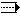
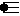
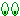

ou Alt+CTC)
ou Alt+CTC)Pour sélectionner la carte carrefour utilisée pour décrire un carrefour.
Type de carte - Rond point ( ou Alt+CTR)
Pour sélectionner la carte rond point utilisée pour décrire un rond point.
Type de carte - Grille ( ou Alt+CTG)
Pour sélectionner la carte grille utilisée pour disposer des chemins et des routes sur une grille.
Type de carte - Clipart (
 ou Alt+CTL)
ou Alt+CTL)Pour sélectionner la carte clipart utilisée pour sélectionner un clipart parmi la collection disponible.
Type de carte - Cap (
 ou Alt+CTP)
ou Alt+CTP)Pour sélectionner la carte cap utilisée pour indiquer un cap à suivre.
Type de carte - Heure (
 ou Alt+CTH)
ou Alt+CTH)Pour sélectionner la carte heure utilisée pour indiquer une direction à suivre.
Type de carte - Arcs et plans ( ou Alt+CTA)
Pour sélectionner la carte arcs et plans utilisée pour disposer des arcs et des plans sur un quadrillage.
Type de carte - Texte (
 ou Alt+CTT)
ou Alt+CTT)Pour sélectionner la carte texte utilisée pour saisir un texte.
Type de carte - Vectorielle (
 ou Alt+CTV)
ou Alt+CTV)Pour sélectionner la carte vectorielle utilisée pour placer des droites et des courbes sur un quadrillage.
Type de carte - Borne (
 ou Alt+CTB)
ou Alt+CTB)Pour sélectionner la carte borne utilisée pour disposer des bornes.
Type de carte - Mille pattes (
 ou Alt+CTM)
ou Alt+CTM)Pour sélectionner la carte mille pattes utilisée pour décrire un mille pattes.
Type de carte - Image (
 ou Alt+CTI)
ou Alt+CTI)Pour sélectionner la carte image utilisée pour afficher une image.
Type de carte - Lignes de texte (
 ou Alt+CTX)
ou Alt+CTX)Pour sélectionner la carte lignes de texte utilisée pour afficher dix lignes de texte.
Type de carte - Ponts ( ou Alt+CTO)
Pour sélectionner la carte ponts utilisée pour placer des ponts.
Type de carte - Villes (
 ou Alt+CTS)
ou Alt+CTS)Pour sélectionner la carte ponts utilisée pour placer des entrées ou des sorties de ville.
Type de chemin - Effaceur (
 ou Alt+CCE)
ou Alt+CCE)Pour sélectionner l'objet effaceur.
Type de chemin - Chemin (
 ou Alt+CCC)
ou Alt+CCC)Pour sélectionner l'objet chemin.
Type de chemin - Chemin - Destination (
 ou Alt+CCD)
ou Alt+CCD)Pour sélectionner l'objet chemin de destination.
Type de chemin - Chemin - Destination inverse (
 ou Alt+CCI)
ou Alt+CCI)Pour sélectionner l'objet chemin de destination inversée.
Type de chemin - Chemin - Origine (
 ou Alt+CCO)
ou Alt+CCO)Pour sélectionner l'objet chemin d'origine.
Type de chemin - Chemin - Origine inverse (
 ou Alt+CCN)
ou Alt+CCN)Pour sélectionner l'objet chemin d'origine inversée.
Type de chemin - Sentier ou hors piste ( ou Alt+CCS)
Pour sélectionner l'objet sentier ou hors piste.
Type de chemin - Sentier ou hors piste - Destination (
 ou Alt+CCH)
ou Alt+CCH)Pour sélectionner l'objet sentier ou hors piste de destination.
Type de chemin - Sentier ou hors piste- Destination inverse (
 ou Alt+CCP)
ou Alt+CCP)Pour sélectionner l'objet sentier ou hors piste de destination inversée.
Type de chemin - Sentier ou hors piste- Origine (
 ou Alt+CCG)
ou Alt+CCG)Pour sélectionner l'objet sentier ou hors piste d'origine.
Type de chemin - Sentier ou hors piste- Origine inverse (
 ou Alt+CCT)
ou Alt+CCT)Pour sélectionner l'objet sentier ou hors piste d'origine inversée.
Type de chemin - Voie de chemin de fer (
 ou Alt+CCV)
ou Alt+CCV)Pour sélectionner l'objet voie de chemin de fer.
Type de chemin - rivière (
 ou Alt+CCR)
ou Alt+CCR)Pour sélectionner l'objet rivière.
Type de route - Effaceur (
ou Alt+CRE)Pour sélectionner l'objet effaceur.
Type de route - Route (
 ou Alt+CRR)
ou Alt+CRR)Pour sélectionner l'objet route.
Type de route - Route - Destination (
 ou Alt+CRD)
ou Alt+CRD)Pour sélectionner l'objet route de destination.
Type de route - Route - Destination inverse (
 ou Alt+CRI)
ou Alt+CRI)Pour sélectionner l'objet route de destination inversée.
Type de route - Route - Origine (
 ou Alt+CRO)
ou Alt+CRO)Pour sélectionner l'objet route d'origine.
Type de route - Route - Origine inverse (
 ou Alt+CRN)
ou Alt+CRN)Pour sélectionner l'objet route d'origine inversée.
Type de route nationale - Effaceur (
ou Alt+CNE)Pour sélectionner l'objet effaceur.
Type de route nationale - Route nationale (
 ou Alt+CNR)
ou Alt+CNR)Pour sélectionner l'objet route nationale.
Type de route nationale - Route nationale - Destination ( ou Alt+CND)
Pour sélectionner l'objet route nationale de destination.
Type de route nationale - Route nationale - Destination inverse (
 ou Alt+CNI)
ou Alt+CNI)Pour sélectionner l'objet route nationale de destination inversée.
Type de route nationale - Route nationale - Origine (
 ou Alt+CNO)
ou Alt+CNO)Pour sélectionner l'objet route nationale d'origine.
Type de route nationale - Route nationale - Origine inverse (
 ou Alt+CNN)
ou Alt+CNN)Pour sélectionner l'objet route nationale d'origine inversée.
Type de route nationale - Route avec séparateur central (
 ou Alt+CNC)
ou Alt+CNC)Pour sélectionner l'objet route avec séparateur central .
Type de route nationale - Route avec séparateur - Destination (
 ou Alt+CNS)
ou Alt+CNS)Pour sélectionner l'objet route avec séparateur central de destination.
Type de route nationale - Route avec séparateur - Destination inverse (
 ou Alt+CNP)
ou Alt+CNP)Pour sélectionner l'objet route avec séparateur central de destination inversée.
Type de route nationale - Route avec séparateur - Origine (
 ou Alt+CNG)
ou Alt+CNG)Pour sélectionner l'objet route avec séparateur central d'origine.
Type de route nationale - Route avec séparateur - Origine inverse ( ou Alt+CNV)
Pour sélectionner l'objet route avec séparateur central d'origine inversée.
Type de vue - Première carte ( ou Alt+CVP)
Pour sélectionner la première carte.
Type de vue - Deuxième carte (
 ou Alt+CVD)
ou Alt+CVD)Pour sélectionner la deuxième carte.
Type de vue - Troisième carte (
 ou Alt+CVT)
ou Alt+CVT)Pour sélectionner la troisième carte.
Type de vue - Quatrième carte (
 ou Alt+CVQ)
ou Alt+CVQ)Pour sélectionner la quatrième carte.
Type de vue - Carte des objets (
 ou Alt+CVO)
ou Alt+CVO)Pour sélectionner la carte des objets.
Type de vue - Carte d'aperçu ( ou Alt+CVA)
Pour sélectionner la carte de prévisualisation du résultat final de la case tel qu'elle sera imprimée.